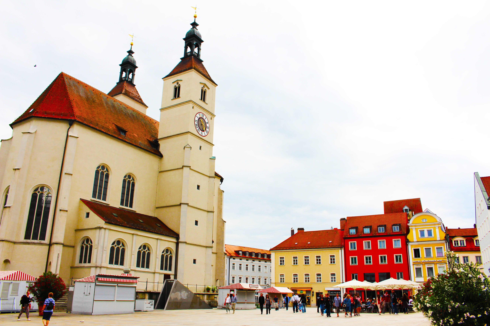

Германия – страна разнообразных пейзажей и интересных городов.
Добро пожаловать в Германию!
Купить билет
Добро пожаловать в Германию!
Купить билетГермания - удивительная и невероятно красивая страна. Здесь есть на что посмотреть и что попробовать. Это родина выдающихся философов, поэтов, мыслителей и композиторов. Если Вы все еще сомневаетесь, что эта страна способна произвести на Вас фантастическое впечатление, то мы подготовили несколько удивительных фактов.
В каждой стране есть свои порядки. Прежде, чем поехать в Германию, предлагаем узнать некоторые особенности местной жизни.
1.В Германии уже много лет сортируют мусор. В противном случае Вас ждет немалый штраф.
2.Это страна велосипедистов. Здесь на 60 человек приходится 80 велосипедов.
3.Самая популярная фамилия в Германии - Мюллер. Ее носят около 320 тысяч немцев.
4.Немцы называют свою страну "Deutschland", что в переводе означает "страна народов".
5.В Германии самая большая численность населения среди других государств Европейского Союза.
6.В Германии разговаривают на нескольких диалектах. Таким образом, когда по телевизору для южан передают новости с северной части страны, внизу идет строка с субтитрами.
7.Германия была первой страной в мире, которая перешла на летнее время. Этот шаг был сделан еще во времена Первой мировой войны с целью экономии электроэнергии.
8.В Германии можно жить на пособие по безработице и не работать. Но жить Вы будете очень бедно.
9.Здесь запрещено пользоваться травматическими пистолетами и газовыми баллончиками.
10.В Баварии в течение рабочего дня разрешено выпить кружку пива.
11.Если немец с Вами общается приветливо и дружелюбно, это вовсе не значит, что Вы ему нравитесь. Он просто хорошо воспитан.
12.Если в кафе оставить официанту больше 1 евро, то это будет считаться хорошими чаевыми.
13.В Германии курит меньшинство.
14.Немцы считают Берлин самым грязным городом в стране.
15.Если сорвать цветок с клумбы в Германии, то можно заплатить штраф в размере 650 евро.
1.В Германии больше 1000 видов колбас, 300 видов хлеба и около 5 тысяч сортов пива.
2.В Баварии сосредоточена третья часть пивоваренных заводов мира.
3.Жевательная резинка была придумана именно в Германии.
4.Пиво в Германии варят строго по рецепту. Согласно регламенту, вода, дрожжи, ячмень и хмель - 4 ингредиента, которые можно использовать в пивоварении.
5.Популярный напиток Fanta тоже изобрели в Германии. В то время, в 1940 году было запрещено ввозить сироп для Coca Cola. Поэтому новый напиток сделали из тех продуктов, что были.
6.Шварцвальд (Черный лес) - самый известный немецкий торт. В его состав входит бисквит, сливки и вишня, маринованная в вишневом шнапсе.
7.Здесь настолько высокие санитарные нормы, что можете спокойно съесть сырое мясо.
8.Германия - это рай для сладкоежек.
9.Пиво обычно закусывают брецелем - это немецкий соленый крендель.
10.Мороженое в немецком McDonald's очень напоминает по вкусу советский пломбир.